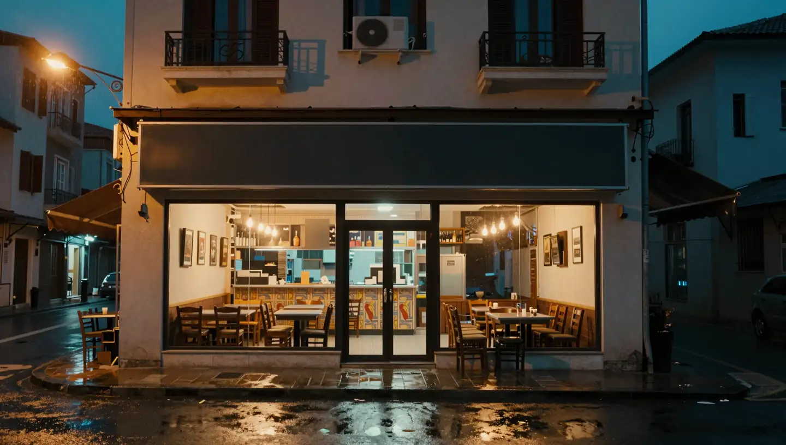
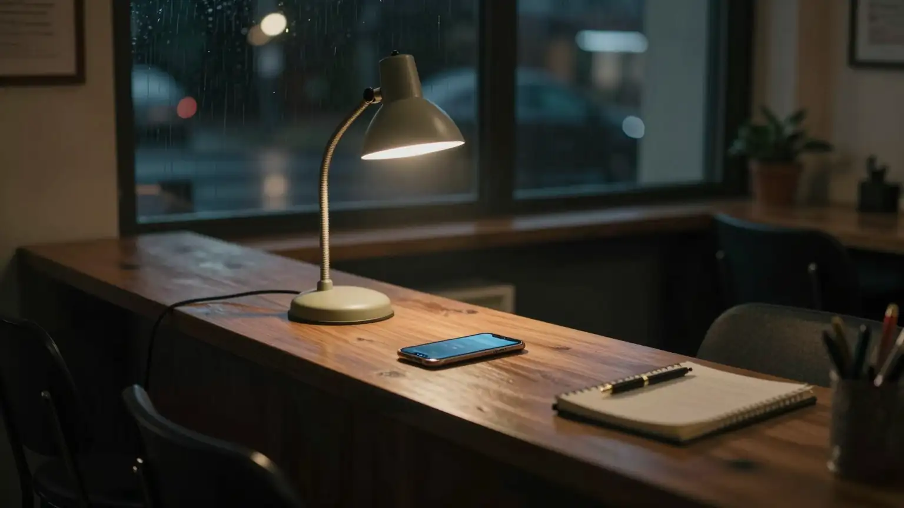

Dijitabela · Antalya'dan Türkiye'ye
Tabelanız sokakta.
İnternettekini biz yakarız.
01 · Canlı kurulum
Siteniz şu an kuruldu.
Hazır bir resim değil: adınızdan logo işareti ve renkler üretildi, sektörünüzün bölümleri dizildi, örnek fotoğraflar yerleşti. İçinde gezin, tasarım dilini değiştirin.
Gerçek sitede sizin dükkânınız ve sizin işiniz olur; telefonla çekmeniz yeter, düzenlemeyi biz yaparız.
Yorum ve harita alanları yer tutucudur. Gerçek sitede Google yorumlarınız olduğu gibi görünür.
Taslak yalnız sizin tarayıcınızda kurulur. Beğenirseniz “Bunu gerçeğe çevir” ile bize yazarsınız.
02 · Örnek senaryo
Bir müşterinin otuz saniyesi.
- 00:00
Arıyor.
Saat 21:40. Müşteri telefonunu çıkarıp “yakınımda oto servis” yazıyor. Kimi arayacağına o ekranda karar verir.
- 00:08
Sizi kapalı sanıyor.
Kaydınız sahiplenilmemiş, saatler boş; harita “kalıcı olarak kapandı” diyor. Müşteri bir sonrakine geçiyor ve siz bundan hiç haberdar olmuyorsunuz.
- 00:19
Bu kez kapınız açık.
Kaydınız düzeltilmiş, siteniz telefonda hemen açılıyor; gece yazılan WhatsApp mesajına da karşılama düşüyor.
- 00:30
Telefonunuz çalıyor.
Talep telefonunuza düşer, müşteri kaydı açılır, randevu takvime yazılır. Ay sonunda ne olduğunu tek sayfalık raporda görürsünüz.
İşletme ve müşteri kurgusaldır; ekran, kurduğumuz düzenin sadeleştirilmiş hâlidir.
03 · Canlı röntgen
Mevcut sitenize şimdi bakalım.
Adresi yazın; sistemimiz sitenizi gerçekten açar ve yirmiden fazla noktada ölçer. Puanı ve en önemli eksikleri burada görürsünüz. Yaklaşık 45 saniye sürer.
Sonuç burada görünür

21:52 Dükkân kapandı, telefon hâlâ açık.
04 · Sesini duyun
Kapandıktan sonra da cevap veren bir ses.
Ayşe, Dijitabela'nın yapay zekâ ile üretilmiş sesidir. Bir bölüm seçin; söylediği her cümle konuşurken yazıya dökülür. Ses yalnız siz başlatınca çalar.
Bir bölüm seçin; Ayşe anlatsın.
Hazır.
Aynı ses telefonu da açabiliyor: kim olduğunu ve yapay zekâ olduğunu söyler, dinler, randevu notunu size iletir. Dürüst durum: telefon asistanı pilot aşamasındadır, paketlere dahil değildir. Asistan sayfası
Bu sesler yapay zekâ ile üretilmiştir.
05 · Atölye
Laf değil, çalışan iş.
Yanda gördüğünüz, yayında olan gerçek bir araçtır ve bu sayfanın içinde çalışır. Rakam girin, sonucu görün; verileriniz cihazınızdan çıkmaz.
Küçük işler için küçük araçlar.
Kira artışı, gecikme zammı gibi her gün elle yapılan hesapları tek ekrana indiriyoruz. Aynı ustalıkla işletmenize özel paneller de yazıyoruz.
06 · Fiyat baştan belli
Üç fiyat, gizli kalem yok.
Görüşmeden önce ne alacağınızı ve ne ödeyeceğinizi bilin. Hangisinin size uyduğundan emin değilseniz dört soruluk yapılandırıcı söyler.
Google Vitrin
2.490TL
Haritadaki kaydınız baştan sona düzenlenir: saatler, fotoğraflar, hizmet listesi, bütün yorumlara cevap taslağı.
Aylık · başlangıçDijital Ön Büro · Giriş
3.900TL / ay
Site, Google profili, WhatsApp karşılama ve aylık rapor. Biz kurar, her ay biz yürütürüz.
Kurulum 4.900 TL (tek sefer)
AylıkDijital Ön Büro · Standart
5.900TL / ay
Giriş'in iki katı içerik, 5 sayfaya kadar site, rakip karşılaştırması ve aylık görüşme.
Kurulum 4.900 TL (tek sefer)
Fiyatlar KDV hariçtir. Aylık paketlerde ilk 3 ay asgari süredir; sözleşme ve kurulumun %50'si kapora ile başlanır. Özel yazılım ve otomasyon işleri yazılı, sabit fiyatlı teklifle yapılır.
Bana uyanı dört soruda bulEkspertiz
Ücretsiz. Google kaydınız, siteniz ve rakipleriniz incelenir; eksikler önem sırasıyla yazılır.
Taslak
İşletmenize özel taslak hazırlanır. Beğenmezseniz hiçbir şey ödemezsiniz.
Kurulum
Sözleşme ve kapora ile başlar; Dijital Ön Büro kurulumu ilk 7 günde teslim edilir.
Her ay
Yapılan işler ve sayılar tek sayfalık raporla gelir. İlk 3 aydan sonra dilediğiniz ay bırakırsınız.
Dükkânı siz açın. İnternetteki kapıyı biz açık tutalım.
Önce ücretsiz ekspertiz, sonra taslak. Beğenmezseniz borcunuz olmaz.